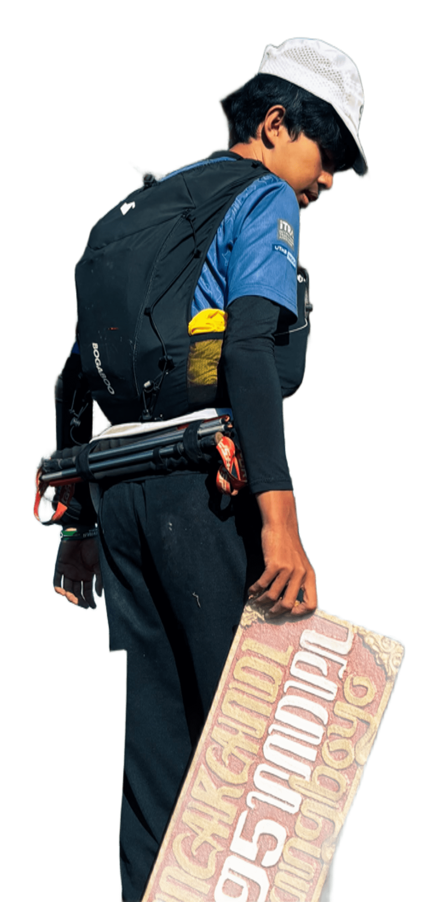

Hello, I'm
CYBER SECURITY ANALYST & BUG HUNTER
Saya menemukan celah keamanan web secara etis dan menyusun laporan yang jelas. Di luar layar, saya mendaki gunung dan mendokumentasikan perjalanannya.
Terbuka untuk kolaborasi
✦Mencari celah,
memperkuat sistem.
Teknik InformatikaUniversitas Brawijaya
Angkatan 26Staff M00D HMDTIFFILKOM UB
202601 / 08